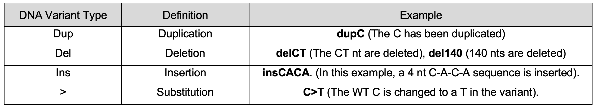
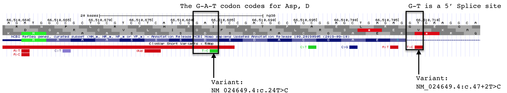
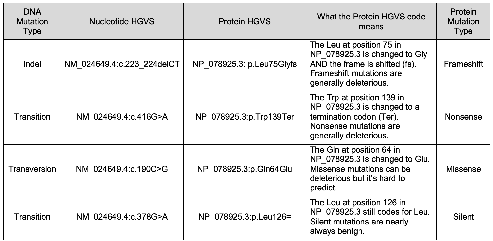
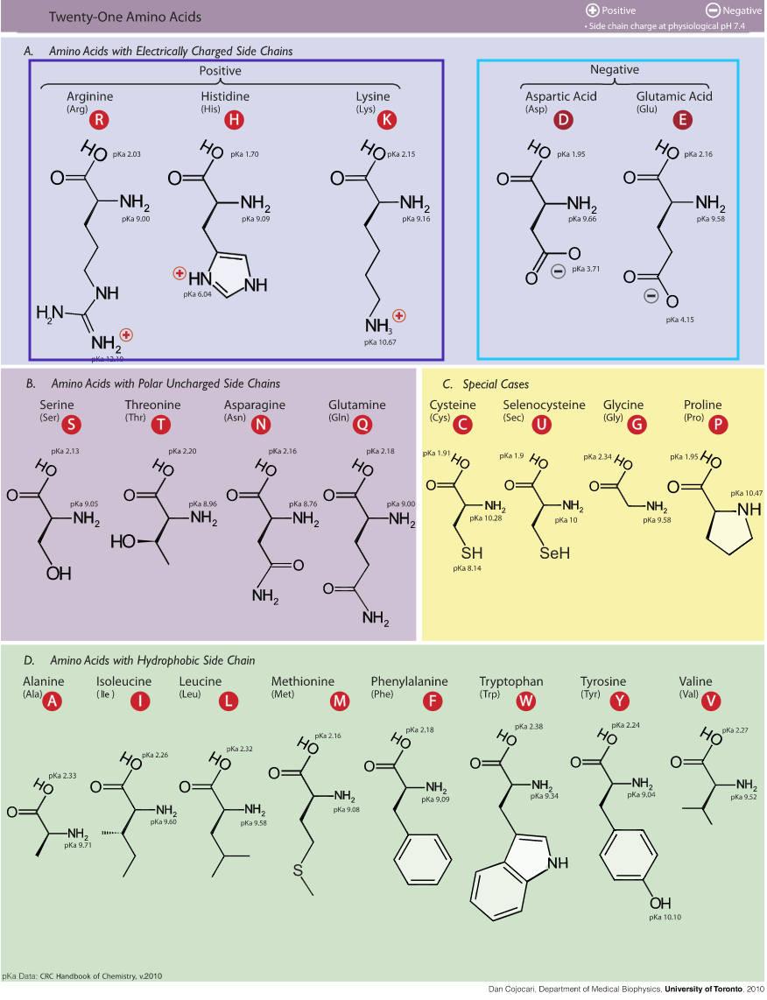

8 Gene discovery using pathogenic sequence variants
A Sequence variant57 that leads to disease (or any measurable change in an organism’s phenotype) provides evidence for the existence of a gene. When a sequence variant is mapped to the genome, the location of the gene is also discovered.
To follow along with the text and to answer “Test Your Understanding” questions, you will be using the “Sequence Variants” session for this chapter.
8.1 One Gene: Two Definitions
A gene can be defined as a segment of DNA that produces a gene product. To prove a gene exists using this definition, one can search for physical evidence: the gene product itself. In chapters four and five, we looked at RNA as physical evidence. A gene is also defined as “a functional unit of inheritance”. To prove a gene exists using this definition one can look for a phenotypic change that is passed from one generation to the next. Heritable phenotypic changes are caused by sequence variants that fall within genes. Thus, a sequence variant that causes a phenotypic change can be used as physical evidence, pinpointing the location of a gene.
That said, every gene cannot be identified in this way even if a DNA variant renders a gene inactive. Why? Some genes when inactive do not produce a measurable phenotypic change. Why you ask? Perhaps you don’t know where to look or what to measure. Or there might be more than one gene with the same function (genetic redundancy58) and thus inactivating one gene may not lead to a phenotypic change because another similar gene is still functional.
8.2 Understanding DNA variants
Open the “Sequence Variants” session to view DNA variants that map to BBS1. Each variant is colored according to its known clinical significance: red for pathogenic, green for benign and gray for uncertain significance. Each mutation is also coded according to type (i.e. substitution or InDel). See (Figure 8.1) for a list of DNA variant codes you are likely to encounter.

Figure 8.1: The most common DNA varient abbreviations you are likely to see.
The evidence track we are using to view these sequence variants is called “Clinvar Short Variants < 50 bp”. It can be found in the “Phenotype and Literature” section within the list of evidence tracks below the browser window. I have it set to “pack”. What is Clinvar? ClinVar is a freely accessible, public archive that reports the relationship between sequence variants in humans (DNA substitutions or indels59) and phenotypes (benign or pathogenic). ClinVar contains submissions by clinicians and research scientists about patients or human research subjects concerning the clinical significance of sequence variants. Some are described as pathogenic (cause disease) while others are described as benign. It’s important to keep in mind that not all submissions have been verified. In other words, some data displayed in this evidence track may be inaccurate. In any case, information about short variants (< 50 bp) identified in human genes has been uploaded from the Clinvar archive into the UCSC genome browser.
Now zoom into coding exon 1 then click on any variant. This will take you to a new page that describes the sequence variant in more detail including how the impact the sequence variant has on the nucleotide sequence (Nucleotide HGVS), the protein sequence (Protein HGVS). It may also describe any phenotype associated with the sequence variant and its clinical significance (if any).

Figure 8.2: Two variants that are described in detail in the text.
Now click on the the green T>C variant highlighted on the left in Figure 8.2. Notice that the “Nucleotide HGVS” is NM_024649.5:c.24T>C (confirm for yourself so you know where you should be looking). This means that at position 24 of the BBS1 mRNA sequence described in NM_024649.560, the thymine (T) is changed to cytosine (C). This is a DNA substitution. Also, the “Protein HGVS” is NP_078925.3:p.Asp8=. This means that at position 8 of the BBS1 protein sequence described in NP_078925.361, the Asparagine (Asp, D) still codes for asparagine (=). This is a silent mutation (indicated with “=”). You can confirm this by looking at the mutation in context. The reference codon62 for Asparagine (Asp, D) at this position is G-A-T (Figure 8.2). In the variant, the codon changes to G-A-C (this is a T>C substitution). If you consult the genetic code (Chapter 3, Figure 3.8) you will see that both codons code for Asparagine, Asp, D. This is also consistent with the fact that this variant is shaded green (benign). (Figure 8.3, includes a list of HGVS codes that describe the various impacts a mutation can have on the DNA and the protein. And click here for a reminder of how to classify DNA mutations in general.

Figure 8.3: For examples of DNA variants and their assocated Nucleotide and Protein HGVS codes.
Sometimes the Protein HGVS row is blank. This is often the case for splice site mutations as it is near impossible to predict what impact this type of mutation will have on the protein sequence. Will the intron remain in the mature mRNA? Will the an exon be skipped during splicing? Moreover, the position of the mutation is difficult to describe using the NM_ code as by definition mRNAs lack introns! The following is an example of a Nucleotide HGVS description for a splice site mutation: NM_024649.5:c.47+2T>C. In this example, position 47 is the last nucleotide of exon 1. Thus the mutation is found at 47+2 position (2nd nucleotide in the intron). In other words, the highly conserved T in the G-T of the 5’ SS of intron 1 is mutated to a C.
Importantly, you can search for a specific variant in the UCSC genome browser using “Nucleotide HGVS” info (i.e. NM_024649.5:c.24T>C), or the “Protein HGVS” (i.e. NP_078925.3:p.Asp8=) or the “ClinVar Variation Report” (i.e. NM_024649.5(BBS1):c.24T>C (p.Asp8=)). This knowledge will come in handy when you test your understanding!
8.2.1 Test Your Understanding
To answer the following “Test Your Understanding” questions, use the “Sequence Variants” session. You may also need to consult Figure 8.4 below to remember how amino acids are grouped according to the functional properties associated with their side chains (hydrophobic, polar uncharged etc).
Consider the coding variant NM_024649.5:c.235G>T to answer the following questions:
- Copy and paste Nucleotide HGVS description from above into the Genome Browser window. What type of sequence variant is this (i.e. transition, transversion or indel)?
- What is the sequence of the reference codon impacted by the G>T mutation?
- What amino acid does the reference codon code for?
- What does the reference codon become in the NM_024649.5:c.235G>T variant?
- What amino acid does the variant codon code for (if any)?
- What type of protein variant is this?

Figure 8.4: Amino acid side chains can be grouped according to chemical properties. This image illustrates one way amino acids can be grouped. Image credit: Dan Cojocari.
8.2.2 Test Your Understanding
To answer the following “Test Your Understanding” questions, use the “Sequence Variants” session.
Now consider the coding variant NM_024649.5:c.41C>G to answer the following questions:
- Copy and paste Nucleotide HGVS description from above into the Genome Browser window. What type of sequence variant is this (i.e. transition, transversion or indel)?
- What is the sequence of the reference codon impacted by the C>T mutation?
- What amino acid does the reference codon code for?
- What does the reference codon become with the NM_024649.5:c.41C>G variant?
- What amino acid does the variant codon code for (if any)?
- What type of protein variant is this?
Now consider the coding variant NM_024649.5:c.240C>T to answer the following questions:
- Copy and paste Nucleotide HGVS description from above into the Genome Browser window. What type of sequence variant is this (i.e. transition, transversion or indel)?
- What is the sequence of the reference codon impacted by the C>T mutation?
- What amino acid does the reference codon code for?
- What does the reference codon become with the NM_024649.5:c.240C>T variant?
- What amino acid does the variant codon code for (if any)?
- What type of protein variant is this?
General Questions about mutations.
- What type of sequence variants lead to a frameshift mutation (transition, transversion, indel)?
- By definition, where must frameshift mutations be located (i.e. exons, introns, 5’ UTR, 3’ UTR, promoter)?
- By definition, where must splice site mutations be located (i.e. exons, introns, 5’ UTR, 3’ UTR, promoter)?
- By definition, where must nonsense mutations be located (i.e. exons, introns, 5’ UTR, 3’ UTR, promoter)?
Step back and look at a larger region surrounding BBS1. Specifically, click on the link for “Sequence Variants” session then zoom out 10X. This region now includes neighboring genes including MRPL11, DPP3, BBS1, ZDHHC24, ACTN3 and CTSF.
- Copy and paste a nucleotide HGVS code for any frameshift mutation that maps to BBS1
- Pathogenic sequence variants map to two genes in this region. Choose the two among MRPL11, DPP3, BBS1, ZDHHC24, ACTN3 and CTSF?
8.3 For Discussion
- Some genes don’t have any variants associated with them. Why do you think this is? More than one answer is possible.
- Find the sequence variant that maps to the gene, CCS (Nucleotide HGVS: NM_005125.2:c.487C>T). It suggests that it might lead to neurodegeneration but it is rated as “uncertain significance”. How likely do you think it is that this is a pathogenic allele. Use any tool (including Google searches, your knowledge of genetics and reasoning abilities) to argue one way or the other (there are no right answers).
8.4 Homework
© 2019, Maria Gallegos. All rights reserved.
Everyone’s genome contains millions of sequence variants (small differences in sequence), that make each person unique. Most variants have unknown effects. Some contribute to differences between humans like eye color and blood type while a small number cause disease. Common variants are often described as single-nucleotide polymorphisms (SNPs) while rare variants that lead to disease are sometimes called mutations. That said, it does not make sense to use the word “mutant” when humans are discussed. This word is typically reserved for genetic model systems or laboratory animals that are known to be inbred↩︎
In engineering the word redundancy is used to describe the inclusion of extra components which are not strictly necessary to functioning, but are there in case of failure of other components. In genetics, genetic redundancy is a term used to describe situations where a given biochemical function is encoded by two or more genes that perform the same function. In these cases, mutations (or defects) in one of these genes will have a smaller effect on the fitness of the organism than expected from the genes’ known function. Paraphrased from Wikipedia↩︎
An small insertion or deletion mutation↩︎
An accession number is provided because, as you know, some genes produce multiple unique mRNAs and so the position of a given nucleotide is isoform dependent and must be stated explicitly. In this example, you will find a T at position 24 of the sequence provided in the accession code. See for yourself! A link to the sequence was provided in the main text↩︎
Again, an accession number ID is provided because some genes produce multiple unique mRNAs and thus multiple protein isoforms. So the position of a given amino acid is isoform dependent and must be stated explicitly. In this example, you will find a D at position 8 of the sequence provided in the accession code. Again, a link to the sequence is provided in the main text↩︎
The reference codon is most easily defined as the “wildtype” version of the codon found (as is) in the genome browser. That said, it does not make sense to use the word “wildtype” when humans are discussed (for the same reason it does not make sense to use the word mutant). Moreover, the genome sequence uploaded to the UCSC genome browser was derived from multiple people. The word “wildtype” is typically only used to describe genetic model systems that are known to be inbred.↩︎